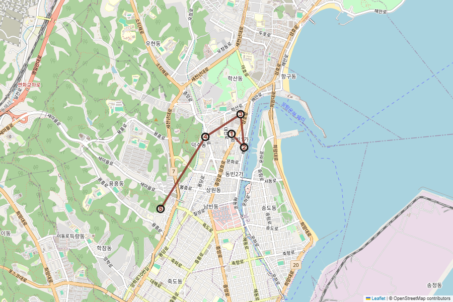
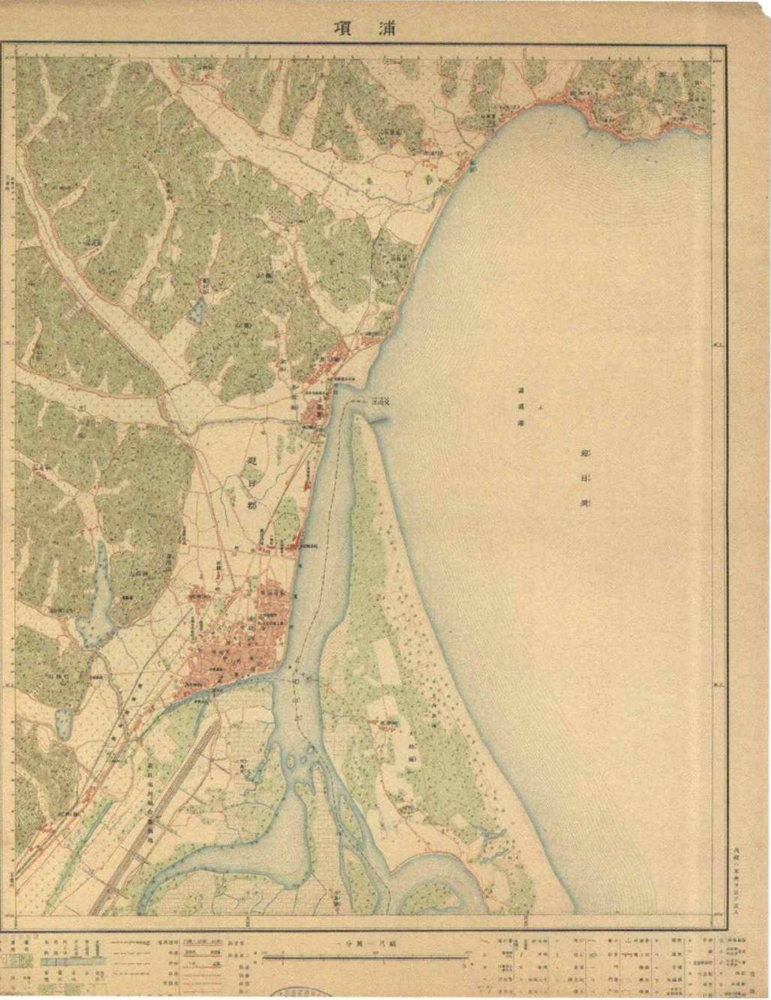
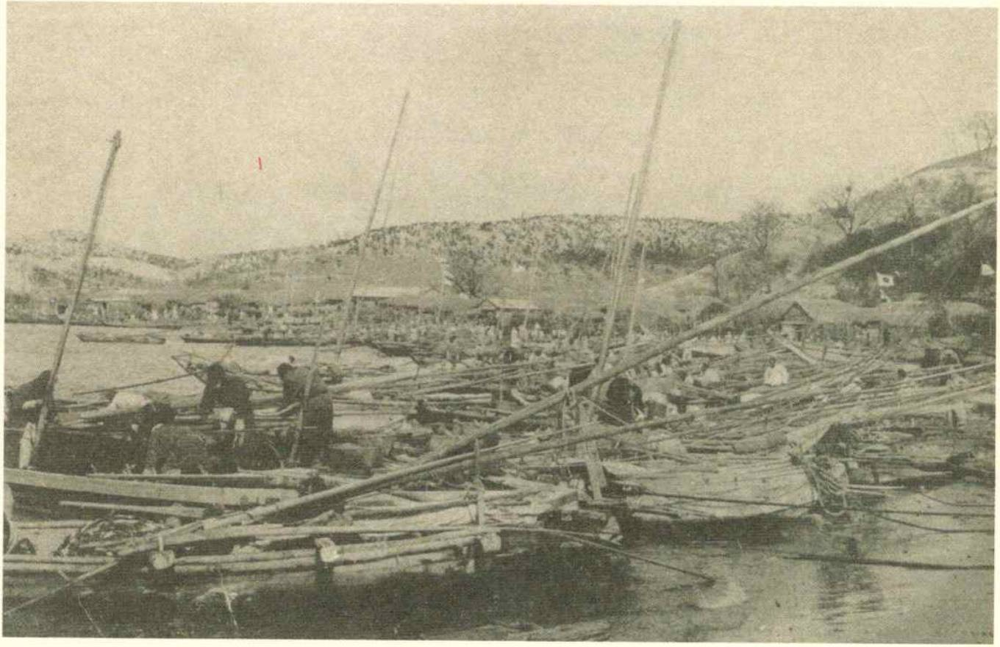
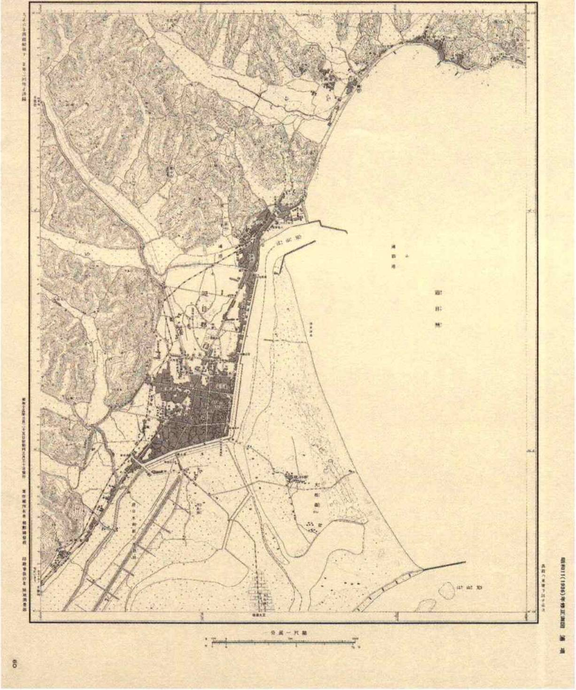

MAP / PHOTO / SOURCE
지금 걷는 길 위에
예전의 포항을 겹쳐 봅니다.
1917·1925·1936년 포항 지도와 현재 답사 지도를 비교하고, 1930년대 거리·시장·항구 사진을 함께 봅니다. 사진은 장식이 아니라 현장에서 확인할 사료입니다.
사료 읽기옛 사진과 지도는 당시 포항의 공간을 보여주지만, 무엇을 찍고 무엇을 기록했는지도 시대의 선택입니다. 자료가 보여주는 것과 보여주지 않는 것을 함께 봅니다.
01
옛 지도 ↔ 현재 지도
슬라이더를 움직여 해안선, 시가지의 밀도, 항만시설의 변화를 비교합니다. 현재 지도는 OpenStreetMap 기반이며 답사 주요 지점을 표시했습니다.


1917현재옛 지도: 『일제의 특별한 식민지 포항』 수록 일제강점기 지도 자료. 현재 지도: OpenStreetMap © contributors. 축척과 투영 방식이 서로 다르므로 형태 비교용으로 사용합니다.
02
1930년대 포항의 거리와 항구
현장에서 같은 방향을 찾아보는 활동에 사용합니다. 사진 속 간판·도로 폭·사람의 옷차림·시장 밀도·배의 종류를 관찰해 보세요.




역사사진·지도 출처: 사용자가 제공한 김진홍 엮고·옮김, 『일제의 특별한 식민지 포항』 수록 자료 중 답사 관련 이미지를 교육용으로 발췌. 원자료의 작성 시점과 시선을 함께 비판적으로 읽습니다.
현장 활동옛 사진과 똑같은 구도를 억지로 찾기보다, 사진 속에서 확인할 수 있는 ‘남아 있는 것 1개 / 사라진 것 1개 / 새로 생긴 것 1개’를 기록합니다.